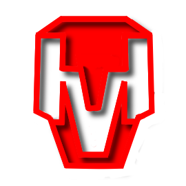

L'entreprise GlideWheels a été fondée officiellement le 15 Août 2042, mais ses racines remontent à 2030. Le projet, nommé à l'origine "Médinor" par Siola Duarrab, était une réponse directe à la domination de SkyMotors Company sur le marché automobile mondial. Là où Gabriel Frouard cherchait à éviter les crashs, Duarrab voulait simplement les survoler.
Le projet a bénéficié d'un financement discret de Jaque Boulon, cofondateur de Jaque & Jaune Travel Group, qui voyait dans GlideWheels une opportunité de concurrencer directement Frouard.
Le nom "Médinor" désigne officiellement la gamme de voitures volantes développée par Siola Duarrab. Cependant, des sources proches du dossier NorWédi indiquent que ce terme recouvre également un programme d'armement secret développé en parallèle. Ces armes, dont la nature exacte reste inconnue, seraient d'une puissance telle que le gouvernement américain aurait constitué une réponse spécifique en la personne de Cyrillac Fauveau.
Des rumeurs non confirmées suggèrent qu'Aloïs Barraud, ancien directeur de SkyMotors évincé en 2038, aurait secrètement contribué au développement du système de propulsion de GlideWheels, motivé par sa rancœur envers Gabriel Frouard.
| Date | Événement | Conséquence |
|---|---|---|
| 2030 | Début du Projet Médinor dans l'ombre. | Début de la rivalité technologique avec SkyMotors. |
| 15 Août 2042 | Fondation officielle de GlideWheels à Moscou. | Entrée fracassante sur le marché automobile mondial. |
| 2044 | Lancement des "HyperWheels". | Pic des ventes : 245 000 véhicules. |
| 30 Juillet 2045 | Explosions inexpliquées de plusieurs véhicules. Liquidation. | Duarrab accuse Alystère Célèste-de-la-Rivière de sabotage. |
| 31 Juillet 2045 | Arrestation de Siola Duarrab. | Déclaré fou. Interné au Goulag de Kazan. |
| Année | Nombre de véhicules vendus |
|---|---|
| 2042 | 32 000 |
| 2043 | 78 000 |
| 2044 | 245 000 |
| 2045 | 123 000 (avant liquidation) |
